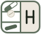

Hävn · nowMetformin 500 mg
Vitamin D 1000 IU
| press | spring · damping 0.70 · stiffness 600 · scale 0.97 |
| lift | spring · damping 0.72 · stiffness 380 · arc flight 700 ms ease-in-out cubic |
| lid | open: spring 0.62 / 300 to 108° · close: same spring with contact bounce ≤ 6° |
| settle | spring · damping 0.85 · stiffness 220 (lists, sheets) |
| reveal | 320 ms · cubic(0.16, 1, 0.3, 1) · 12 dp rise · 45 ms stagger, cap 360 ms |
| shared | 380 ms · bounds spring 0.85 / 260 · content cross-fade 160 ms |
| count | odometer roll 240 ms per digit |
| reduce | all of the above → 0 ms cross-fades when animator scale is 0 |
| tick | PRIMITIVE_TICK 0.35 — touch a pill, scrub periods · fallback CLOCK_TICK |
| click | PRIMITIVE_CLICK 0.7 — dose recorded · fallback CONFIRM |
| thud | PRIMITIVE_THUD 0.5 (API 31+) — lid contact · fallback CONTEXT_CLICK |
| day | QUICK_RISE 0.4 → 60 ms → CLICK 0.6 → TICK 0.3 — day complete |
| reject | LOW_TICK ×2, 40 ms apart — undo / not allowed |
| sfx_tap | existing · UI taps, ≤ 60 ms |
| sfx_lift new | soft breath + wood “tok” at A5, 120 ms, low-passed 6 kHz |
| sfx_take | existing · dose recorded |
| sfx_lid | existing · felt click on lid contact |
| sfx_day new | D5 · F♯5 · A5 arpeggio, 90 ms apart, 1.4 s tail |
| havn_nudge | existing · notification channel sound |